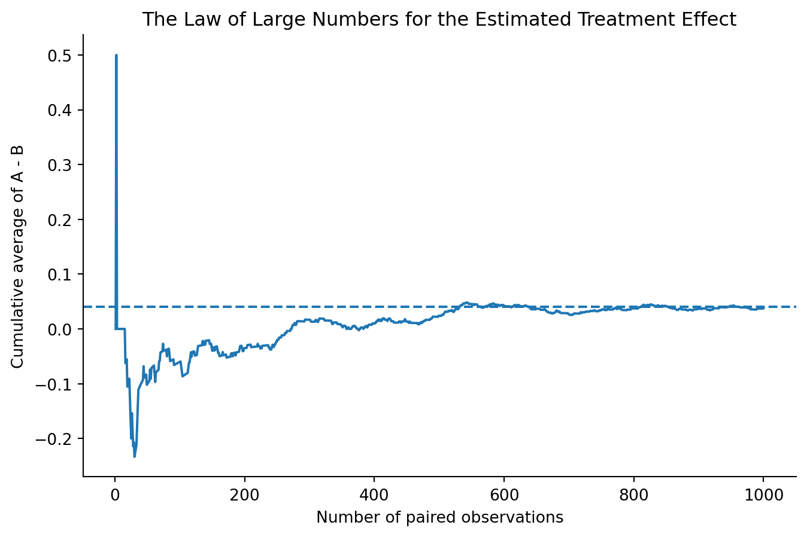
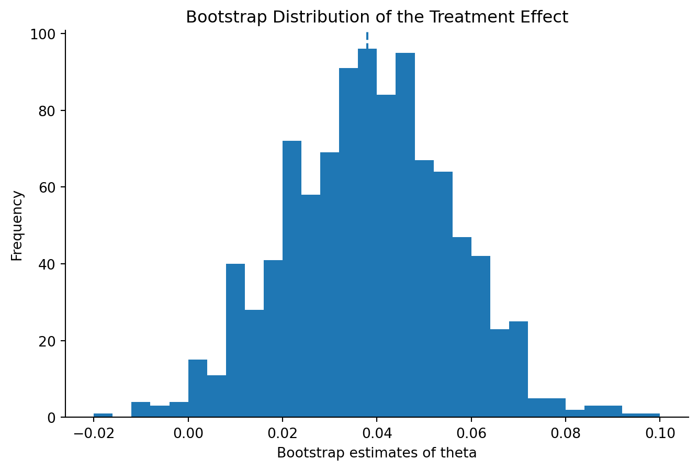
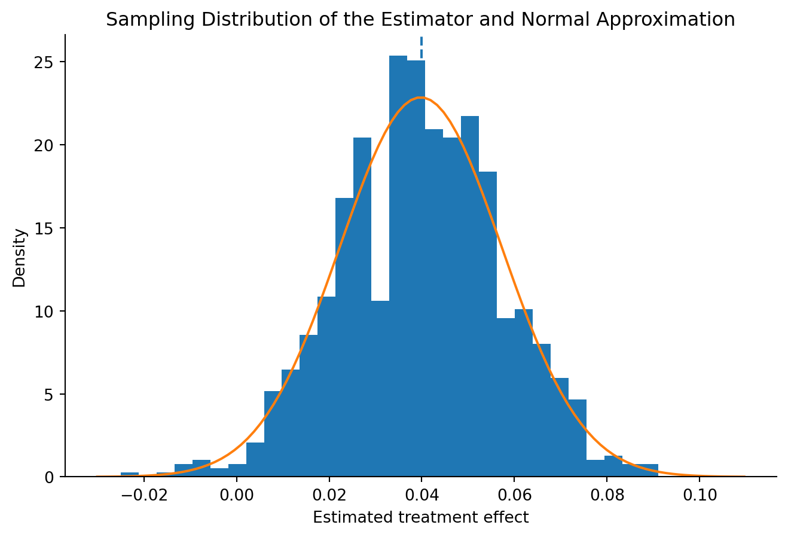

Simulating Key Ideas from Classical Frequentist Statistics
statistics
ab-testing
Author
Shuning Zhang
Published
April 15, 2026
Introduction
My website includes a landing page where visitors can sign up to receive a newsletter. Since the landing page is often the first interaction a visitor has with the site, even small design or wording choices may affect whether that visitor decides to subscribe.
In this post, I study whether the wording of a call to action can change sign-up behavior. I compare two versions of the message shown on the page. CTA A reads “Sign up for our newsletter here!” while CTA B reads “Stay up to date by signing up!” Both messages are trying to encourage the same action, but they may not be equally effective.
To evaluate the two messages, I use an A/B test. In an A/B test, visitors are randomly assigned to one of two versions of a webpage element. One group sees CTA A and the other sees CTA B. Because the assignment is random, differences in sign-up rates between the two groups can be attributed to the CTA wording rather than to systematic differences between visitors. The goal is to determine which CTA produces the higher newsletter sign-up rate.
The A/B Test as a Statistical Problem
We can express this A/B test as a simple statistical problem. For each visitor, the outcome is binary: either the visitor signs up for the newsletter or does not. Because the outcome only takes the values 1 or 0, each observation can be modeled as a Bernoulli random variable with parameter (), where () represents the probability of signing up.
The CTA shown to a visitor may affect that probability, so I allow the sign-up rate to differ across the two groups. Let (_A) be the probability of signing up for visitors who see CTA A, and let (_B) be the corresponding probability for visitors who see CTA B.
The quantity of interest is the difference in sign-up rates: [ = _A - _B ] If (> 0), CTA A performs better on average. If (< 0), CTA B performs better.
Because the true probabilities (_A) and (_B) are unknown, I estimate them using the observed sample means in each group. Since the data are binary, each sample mean is just the sample proportion of visitors who signed up. This gives the estimator [ = {X}_A - {X}_B ] where ({X}_A) is the sample sign-up rate for CTA A and ({X}_B) is the sample sign-up rate for CTA B.
Simulating Data
In a real A/B test, the true sign-up probabilities would be unknown. We would only observe sample outcomes and then try to infer the underlying difference between the two CTAs. For this exercise, however, simulation is helpful because it lets us work in a setting where the truth is known in advance. That makes it easier to evaluate how well our estimator performs.
I assume that visitors who see CTA A sign up with probability (_A = 0.22), while visitors who see CTA B sign up with probability (_B = 0.18). This means the true treatment effect is [ = _A - _B = 0.04. ]
Using these assumptions, I simulate 1,000 Bernoulli observations for each group. Each observation equals 1 if the visitor signs up and 0 otherwise. These simulated samples will be used throughout the rest of the post.
The Law of Large Numbers states that as the sample size increases, the sample average converges to the true population mean. In other words, while individual observations are noisy, averaging over many observations produces a more stable and reliable estimate.
In the context of this A/B test, this idea is important because our estimator of interest, ( = {X}_A - {X}_B), is based on sample averages. As we collect more data, we expect this estimate to get closer to the true treatment effect.
To illustrate this, I compute the difference between the outcomes in the two groups for each observation and then track how the cumulative average of these differences evolves as the sample size grows.
diffs = A - Brunning_mean = np.cumsum(diffs) / np.arange(1, len(diffs) +1)plt.figure()plt.plot(np.arange(1, len(diffs) +1), running_mean)plt.axhline(theta_true, linestyle="--")plt.xlabel("Number of paired observations")plt.ylabel("Cumulative average of A - B")plt.title("The Law of Large Numbers for the Estimated Treatment Effect")plt.show()

At the beginning, the running average fluctuates substantially, even taking on extreme values, because each new observation has a large impact when the sample size is very small. As more observations are added, these fluctuations become less pronounced and the estimate begins to stabilize.
Over time, the cumulative average settles near the true treatment effect of 0.04. This illustrates the Law of Large Numbers: although individual observations are highly variable, averaging over a large number of observations produces a stable and reliable estimate of the underlying population parameter.
Bootstrap Standard Errors
So far, I have computed a single estimate of the treatment effect. However, this estimate is based on a finite sample and is therefore subject to randomness. If I were to repeat the experiment with a different sample, I would likely obtain a slightly different estimate.
To quantify this uncertainty, I use the concept of a standard error. The standard error measures how much an estimator is expected to vary across repeated samples. In this section, I estimate the standard error of () using a bootstrap approach and compare it to the analytical formula.
The bootstrap method works by repeatedly resampling from the observed data with replacement and recomputing the estimator each time. This produces an empirical distribution of the estimator, which can be used to approximate its variability.
plt.hist(boot_thetas, bins=30)plt.axvline(theta_hat, linestyle="--")plt.xlabel("Bootstrap estimates of theta")plt.ylabel("Frequency")plt.title("Bootstrap Distribution of the Treatment Effect")plt.show()

The histogram shows the distribution of the estimated treatment effect across many bootstrap samples. While each individual estimate differs slightly due to random sampling, the values are concentrated around the original estimate. This distribution reflects the uncertainty associated with ().
se_boot = boot_thetas.std()print(f"Bootstrap standard error: {se_boot:.4f}")
The bootstrap standard error is very close to the analytical standard error. This is reassuring, as it suggests that the bootstrap procedure is capturing the variability of the estimator correctly. The analytical formula is derived under standard assumptions, while the bootstrap provides a more general, data-driven way to estimate uncertainty.
Using the bootstrap standard error, I construct a 95% confidence interval for the treatment effect. This interval provides a range of plausible values for the true difference in sign-up rates. If the experiment were repeated many times, about 95% of such intervals would contain the true treatment effect. Importantly, the interval does not include zero, which suggests that there is a statistically significant difference between the two CTAs.
The Central Limit Theorem
The Central Limit Theorem (CLT) provides a theoretical foundation for statistical inference. It states that, under fairly general conditions, the sampling distribution of an estimator becomes approximately normal as the sample size grows.
In this context, the estimator of interest is ( = {X}_A - {X}_B). Even though the underlying data are binary, the CLT tells us that the distribution of () across repeated samples should be approximately normal when the sample size is large.
To illustrate this, I repeatedly simulate new datasets and compute () each time. This allows me to approximate the sampling distribution of the estimator and compare it to a normal distribution.
mean_theta = theta_hats.mean()std_theta = theta_hats.std()x = np.linspace(mean_theta -4*std_theta, mean_theta +4*std_theta, 100)plt.hist(theta_hats, bins=30, density=True)plt.plot(x, norm.pdf(x, mean_theta, std_theta))plt.axvline(theta_true, linestyle="--")plt.xlabel("Estimated treatment effect")plt.ylabel("Density")plt.title("Sampling Distribution of the Estimator and Normal Approximation")plt.show()

The histogram shows the distribution of the estimated treatment effect across many repeated samples. The distribution is approximately symmetric and bell-shaped, even though the underlying data are binary.
The overlaid normal curve closely matches the simulated distribution, indicating that the normal approximation works well in this setting. This is consistent with the Central Limit Theorem, which states that the sampling distribution of an estimator becomes approximately normal as the sample size increases.
This result is important because it allows us to use normal-based methods, such as confidence intervals and hypothesis tests, even when the original data are not normally distributed.
Hypothesis Testing
To formally evaluate whether the two CTAs perform differently, I use a hypothesis test. The goal is to assess whether the observed difference in sign-up rates could plausibly be explained by random variation alone.
The null hypothesis assumes that there is no difference between the two CTAs: [ H_0: = 0 ] while the alternative hypothesis is that there is a nonzero difference: [ H_1: . ]
Under the null hypothesis, the estimated treatment effect should be close to zero, up to sampling variability. I use the standard error of the estimator to compute a test statistic, which measures how far the observed estimate is from zero in standardized units.
The p-value measures how likely it would be to observe a difference at least as extreme as the one in the data if the null hypothesis were true. In this case, the p-value is approximately 0.031, which is below the 5% significance level.
Therefore, I reject the null hypothesis of no difference between the two CTAs. This suggests that the observed difference in sign-up rates is unlikely to be due to random chance alone.
Since the estimated treatment effect is positive, the results indicate that CTA A leads to a higher sign-up rate than CTA B.
The T-Test as a Regression
Another way to analyze the A/B test is to frame it as a regression problem. Instead of comparing group means directly, I can estimate the treatment effect using a simple linear regression.
To do this, I combine the data from both groups into a single dataset and create an indicator variable that equals 1 if the observation comes from CTA A and 0 if it comes from CTA B. I then regress the binary outcome (sign-up or not) on this indicator.
In this setup, the coefficient on the indicator variable represents the difference in average outcomes between the two groups. This means that the regression coefficient should be equal to the estimator ( = {X}_A - {X}_B).
This shows that a two-sample t-test is equivalent to a regression with a binary treatment variable.
X = sm.add_constant(T)model = sm.OLS(Y, X).fit()coef = model.params[1]se_reg = model.bse[1]p_reg = model.pvalues[1]intercept = model.params[0]print(f"Intercept (mean outcome for CTA B): {intercept:.4f}")print(f"Regression estimate of treatment effect: {coef:.4f}")print(f"Standard error: {se_reg:.4f}")print(f"P-value: {p_reg:.4f}")print(f"Difference in means (theta_hat): {theta_hat:.4f}")
Intercept (mean outcome for CTA B): 0.1780
Regression estimate of treatment effect: 0.0380
Standard error: 0.0178
P-value: 0.0327
Difference in means (theta_hat): 0.0380
beta = model.params[1]print(f"Regression estimate of treatment effect: {beta:.4f}")print(f"Difference in means (theta_hat): {theta_hat:.4f}")
Regression estimate of treatment effect: 0.0380
Difference in means (theta_hat): 0.0380
The regression results match the earlier difference-in-means calculation exactly: the estimated coefficient on the treatment indicator is 0.038, which is the same as (). The intercept is 0.178, which corresponds to the average sign-up rate for CTA B.
This confirms that a simple regression with a binary treatment indicator recovers the same treatment effect as the two-sample comparison of means. In this sense, the t-test and the regression approach are just two different ways of expressing the same underlying statistical idea.
The Problem with Peeking
A key assumption behind the hypothesis testing framework used above is that the data are analyzed only once, after the full sample has been collected. In practice, however, it is tempting to monitor the results of an experiment as data come in and stop early if the results look promising. This behavior is often referred to as “peeking.”
Peeking creates a problem because it effectively increases the number of opportunities to reject the null hypothesis. Each time we check the data, there is a chance of observing a statistically significant result purely by random variation. As a result, repeatedly checking the data inflates the probability of a false positive.
In other words, even if there is no true effect, peeking can make it appear as though there is one. This undermines the validity of p-values and confidence intervals, which rely on a fixed sampling plan.
To maintain valid inference, researchers must either commit to a pre-specified sample size or use methods that explicitly account for sequential testing. This highlights an important limitation of standard A/B testing procedures and underscores the need for careful experimental design.